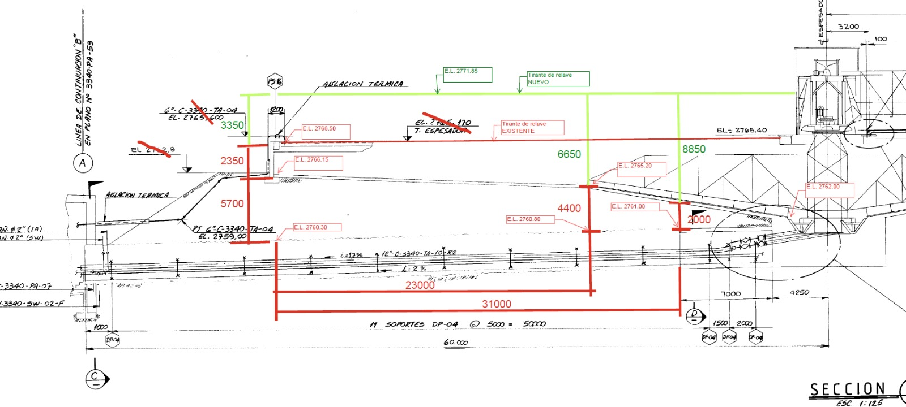

Magnitud | Valor | Unidad |
|---|---|---|
Altura del relleno inferior sobre la clave | 5.7 |
|
Distancia de la clave al centro | 1.315 |
|
Peso unitario efectivo del relleno inferior | 19 |
|
Altura de la capa superior de lodo | 5.7 |
|
Peso unitario de la capa superior de lodo | 14.71 |
|
Presión permanente de la capa superior | 83.8469 |
|
Ángulo de fricción efectiva | 33 |
|
Coeficiente de presión en reposo | 0.455361 | — |
Tensión vertical efectiva en el centro | 217.132 |
|
Tensión horizontal efectiva en el centro | 98.8734 |
|
Presión hidráulica neta | 0 |
|
Módulo de deformación del relleno | 30 |
|
Coeficiente de Poisson del relleno | 0.25 | — |
Esta memoria evalúa la respuesta transversal del revestimiento circular del túnel espesador San Francisco bajo el peso del relleno existente. El análisis comprende la chapa de acero corrugada, una capa de hormigón proyectado simple y una capa de hormigón proyectado armado. Para cada revestimiento se calculan la fuerza circunferencial, el momento flector y la fuerza de corte por metro de túnel; las comprobaciones resistentes emplean las propiedades de la sección correspondiente.
El alcance comprende la definición de las acciones permanentes, la interacción elástica suelo–revestimiento, las resultantes \(N\)–\(M\)–\(Q\), la comprobación de referencia del liner corrugado, la evaluación local del hormigón simple y los dominios \(P\)–\(M\) de las mallas Ø8/150, Ø10/150 y Ø12/150 para espesores de 100 y 150 mm. Quedan fuera del alcance la selección de una armadura definitiva, el detalle constructivo, la acreditación de la edición contractual de las normas y la asignación de propiedades a la chapa y a sus uniones sin respaldo de la inspección. Esas actividades corresponden a la etapa de diseño e inspección posterior.
El perfil longitudinal de la figura 2.1 muestra la variación de las alturas sobre la clave. En el extremo izquierdo de la figura se superponen 3350 mm de lodo y 2350 mm de relleno, con una altura total de 5700 mm. Hacia el extremo derecho, las alturas respectivas son 6650 y 4400 mm, con un total de 11050 mm.

El escenario analizado adopta 5.7 m de lodo y 5.7 m de relleno sobre la clave. Esta idealización produce una presión vertical permanente en la clave de 192.1 kPa; con los mismos pesos unitarios, los dos extremos representados producen 93.9 y 181.4 kPa, respectivamente. Por lo tanto, la acción adoptada envuelve la presión vertical obtenida de las dos configuraciones del perfil. La tabla 2.1 resume este escenario. La altura del relleno inferior se mide desde la clave y la tensión del terreno se evalúa a la cota del centro del túnel. La presión hidráulica neta se incorpora como una acción separada. La tensión horizontal se obtiene mediante el coeficiente de presión en reposo \(K_0\), definido como la razón entre las tensiones efectivas horizontal y vertical.
El informe geotécnico del sector identifica tres unidades y, conforme a la posición del túnel, el terreno circundante corresponde a la segunda: el depósito aluvial-coluvial, compuesto por gravas arenosas con finos de baja plasticidad, clasificadas entre SC y GP-GC. Para esta unidad, la Tabla 3-13 adopta un peso unitario de \(19\ \mathrm{kN/m^3}\), un ángulo de fricción efectiva \(\phi'=33^\circ\), cohesión efectiva nula, coeficiente de Poisson \(\nu=0{,}25\) y módulo secante de referencia \(E_s^{ref}=140\ \mathrm{MPa}\); las campañas de exploración no detectaron nivel freático (SRK Consulting (Argentina) S.A. 2026).
El escenario analizado adopta de esta caracterización el peso unitario y el ángulo de fricción efectiva. Utiliza \(\phi'=33^\circ\) y la relación de Jáky para una condición normalmente consolidada. La presión hidráulica neta adoptada es 0.0 kPa. La relación utilizada para \(K_0\) produce \(K_0=0.455361\) (Michalowski 2005; Christopher et al. 2006). Para la interacción suelo–revestimiento se adopta un módulo elástico constante de 30 MPa. Este valor es una hipótesis específica del análisis y no una conversión del módulo secante de referencia de 140 MPa, cuya aplicación depende del nivel de tensiones y del modelo constitutivo. El módulo adoptado deberá confirmarse con la caracterización geotécnica de diseño; el efecto de esta hipótesis se cuantifica mediante un análisis de sensibilidad dentro de la verificación de cada revestimiento (Verificación del liner de acero y Verificación del liner de shotcrete).
La interacción entre el relleno y cada revestimiento se representa mediante la solución de carga externa de Schwartz–Einstein. Se calculan dos límites de interfaz: deslizamiento libre y ausencia de deslizamiento. Ambos parten de la misma tapada y del mismo estado geotécnico, pero utilizan el radio y las rigideces propias de la chapa o de cada alternativa de hormigón. La comparación muestra la sensibilidad de las resultantes a la rigidez relativa y al contacto.
La chapa se comprueba con una comparación de referencia basada en las expresiones documentadas por USACE, los parámetros AASHTO reproducidos por Anderson et al. y las propiedades publicadas por CSPI (U.S. Army Corps of Engineers 2020; Anderson et al. 2023; Corrugated Steel Pipe Institute, s. f.-a, s. f.-b). Las acciones resistentes del revestimiento enterrado se mayoran con los factores \(EV/EH\) de AASHTO/CIRSOC y el hormigón se evalúa con ACI 318-25 (ACI Committee 318 2025). La memoria compara 3 mallas físicas en dominios fuerza–momento para los dos espesores estudiados, sin adoptar una armadura final. La especificación de inspección establece las mediciones de espesor, geometría y uniones necesarias para actualizar las propiedades del revestimiento existente.